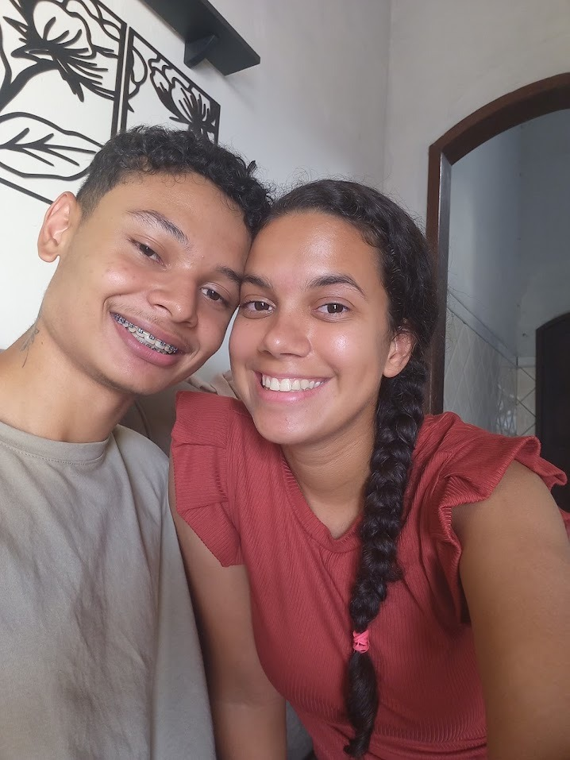
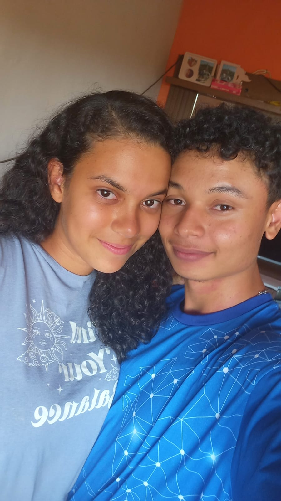
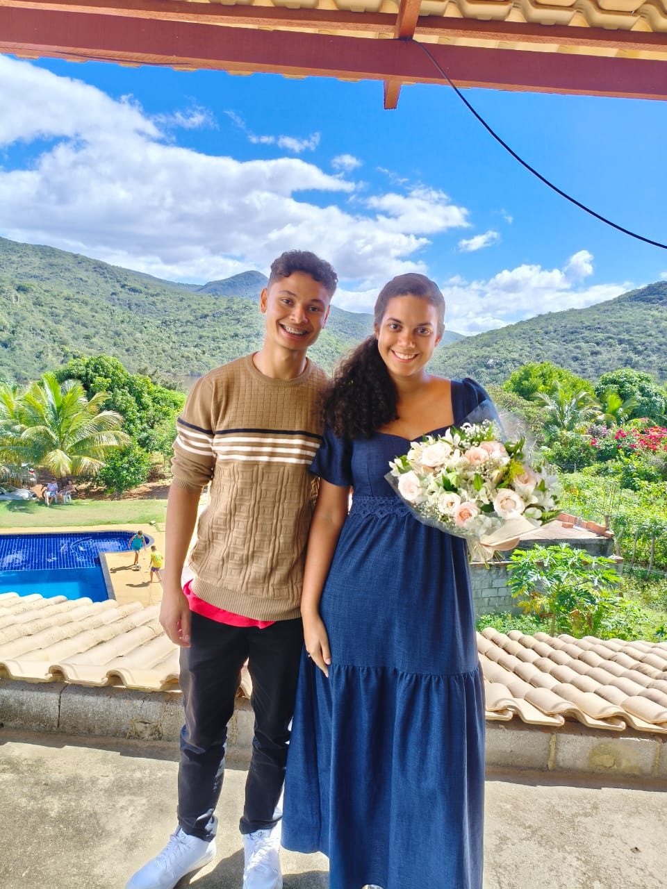

Preparei cada lembrança com muito carinho. Ligue o som e role a página devagar...
Desça mais um pouco para continuar... ↓
0%
Nossa Linha do Tempo
Cada momento ao seu lado foi inesquecível...
1 de Dezembro de 2025
Dia que a gente se conheceu, olhei pra você e achei que cê era uma pessoa incrível, e descobri que eu realmente não estava errado...
4 de Dezembro de 2025
Primeira vez que a gente conversou no WhatsApp, não sabia que eu ia gostar tanto de conversar com uma pessoa e só me deixava ainda mais apaixonado.
28 de Dezembro de 2025
A primeira mensagem "grande" que eu te mandei, e o primeiro sinal que eu te dei sobre fazer a surpresa do pedido de namoro ksksks.
1 de Janeiro de 2026
"Primeiro plano" nosso, ir à praia em Salvador no final do ano para ver o ano novo.
11 de Janeiro de 2026
Primeira vez que fui na sua casa, para conhecer seus pais, fiquei muito nervoso, mas deu certo.
28 de Janeiro de 2026
Primeira vez que você veio na minha casa, primeira tarde juntos e também a primeira vez que a gente se beijou.
2 de Fevereiro de 2026
Nosso primeiro encontro, a gente foi para o Subway depois das suas aulas.
6 de Fevereiro de 2026
O momento especial, muito especial para mim, o momento da surpresa, o momento que eu te pedi em namoro.
6 de Março de 2026
Primeira vez que eu fui na casa de sua avó e a gente passou um final de semana inteiro juntos, assistimos a uma série juntos e ficamos deitados juntos. Foi muito especial pra mim.
3 de Abril de 2026
Primeira vez que você foi na casa da minha avó e foi quando cê conheceu minha família materna quase toda kkkkk.
08 de Maio de 2026
Segundo final de semana que eu passei contigo, quando eu conheci suas tias, Lyse, Sophia.
19 de Junho de 2026
Primeira vez que participamos de um retiro juntos, primeira vez que te dei um buquê e terceiro fim de semana que eu passei contigo.
06 de Julho
Terminamos…



Mas saiba que, independente de sua escolha, eu sempre vou te amar.
Reparando...
Por favor, espere o vídeo terminar porque ainda não é o fim